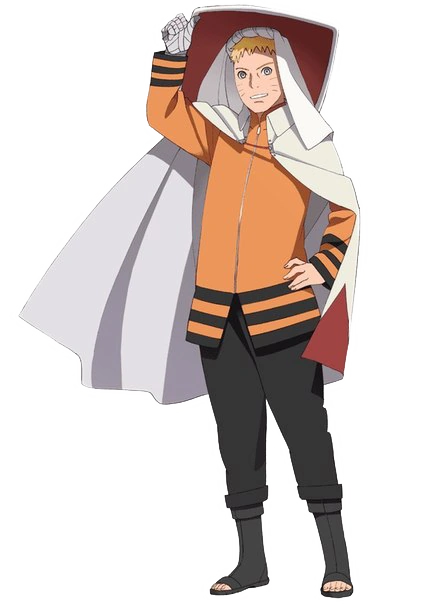
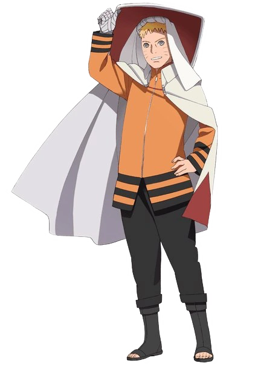
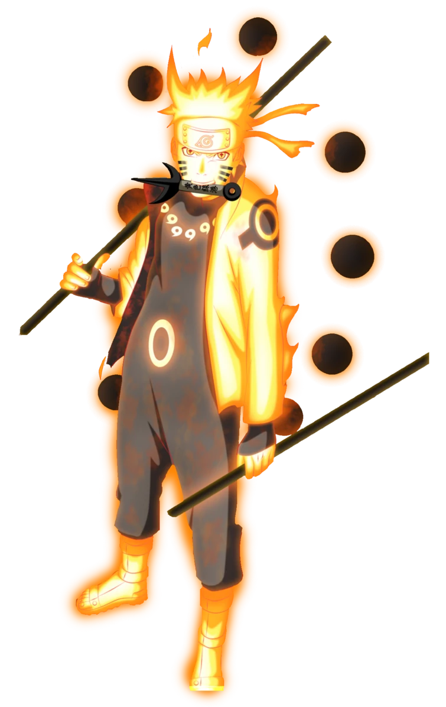
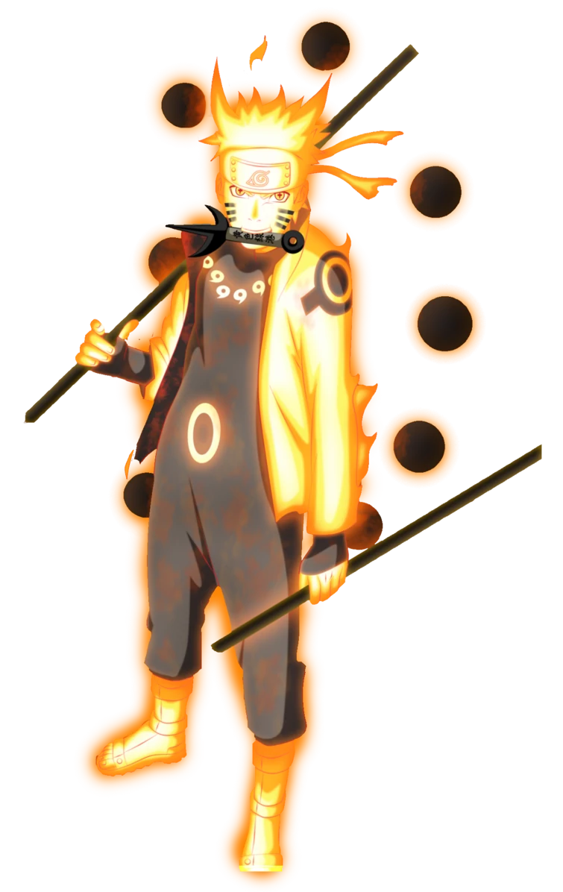

 

Campanhas Publicitárias
Quando começamos a debater mangás/animês nos games com os amigos, é quase inevitável deixar de citar os jogos de Naruto. Assim como ocorre com outras obras japonesas, a franquia foi adaptada para os videogames de diversas maneiras.
O ninja loiro conquistou seu espaço nos corações dos fãs, por causa de sua personalidade animada e histórias cativantes. Várias dessas narrativas, inclusive, foram colocadas nos games que lembraremos nesse especial.
Os 5 jogos de Naruto mais memoráveis
Naruto Ultimate Ninja 3
Naruto Ultimate Ninja 3 abre a nossa lista. O título foi lançado para PlayStation 2 em 2005, sendo desenvolvido pela CyberConnect2, empresa que criaria a série Ultimate Ninja Storm futuramente.
Diferentemente da franquia Storm, o gameplay era em 2D e apresentava 42 personagens jogáveis da era clássica do animê. Entre os modos principais estavam a “Hero’s History” e o “Ultimate Contest”. No primeiro, os jogadores vivenciavam as batalhas (desde o treinamento de Naruto com Kakashi, até a batalha com Sasuke no Vale do Fim). Já o segundo era uma espécie de RPG, onde os players precisavam cumprir missões pela Vila da Folha para desbloquearem personagens e jutsus.
Naruto Uzumaki Chronicles 2
Em 2006, a produtora Cavia trazia Naruto Uzumaki Chronicles 2, sequência do jogo lançado em 2005. O seu grande diferencial estava na história, que era inédita em relação ao animê.
A narrativa linear tinha dez capítulos. O enredo contava sobre um exército de “Marionetes Andarilhas” criadas pelo Clã Shirogane, estas responsáveis por atacarem aldeias em todas as Cinco Grandes Nações. O objetivo delas é achar as “Spirit Orbs”, um conjunto de joias capazes de destruir o mundo. Como o último alvo é o País do Fogo, cabe a Naruto e seus amigos evitar que isso ocorra. Importante mencionar a ausência de Sasuke, que já havia desertado da vila para treinar com Orochimaru.
Após completar a história principal, os jogadores ainda eram agraciados com um segundo cenário, a “Kakashi Saga”. Membros da ANBU encontram membros da Akatsuki e como Naruto, o detentor da Raposa de Nove Caudas, se encontra fora da vila, Tsunade envia Kakashi e Maito Gai em missão, para certificarem de que está tudo bem.
Naruto Shippuden: Ultimate Ninja Storm 2
O primeiro dos jogos de Naruto da série Storm a aparecer nessa lista é o segundo. Lançado em 2010 para PlayStation 3, o título continuava a abordar a saga “Shippuden”, com foco nos combates contra a Akatsuki, organização que se movimentava para capturar as Bestas com Caudas.
A jogabilidade do game mantém a perspectiva apresentada em seu antecessor: a câmera é posicionada atrás do lutador controlado — algo semelhante a Dragon Ball Z: Budokai Tenkaichi 3. São 23 fases de luta na história, com um prólogo e um capítulo extra, que englobam a saga de resgate de Gaara até a luta de Sasuke com Killer Bee.
Entre os personagens jogáveis, os jogadores têm um convidado especial presente no elenco: Lars Alexandersson, de Tekken 6. Além dele, claro, os fãs podem entrar na pele de Naruto (Modo Sennin), Jiraiya, Itachi Uchiha e muitos outros.
Naruto Shippuden: Ultimate Ninja Storm 4
O último jogo da franquia Storm foi o quarto (PS4), que aborda a Grande Guerra Ninja, um arco não tão popular entre alguns fãs. De qualquer forma, o game executa muito bem a ação da guerra, com chefões memoráveis, como Madara Uchiha (vs. Naruto e Sasuke) e Sasuke (vs. Naruto no Vale no Fim), e gráficos muito bonitos.
A lista de personagens jogáveis também é objeto de destaque. Só Naruto Uzumaki tem nove versões diferentes para se escolher (desde sua fase clássica até a do filme “The Last”).
Como se isso já não fosse suficiente, mais tarde a editora Bandai Namco lançou “Road to Boruto”, uma expansão com mais lutadores (incluindo Naruto como Hokage) e com a história do filme “Boruto: Naruto the Movie”. Com isso, o jogo se tornou a versão definitiva da franquia Ultimate Ninja Storm.
Naruto Shippuden Ultimate Ninja 5
Voltando à era PlayStation 2, um dos jogos de Naruto ficou marcado para sempre nas mentes dos fãs. Naruto Shippuden Ultimate Ninja 5 (2007) foi o último título da série em 2D — antes da CyberConnect2 passar a produzir “Storm”. Pois bem… a empresa caprichou.
Na época, o animê ainda estava nas primeiras sagas de Shippuden, portanto, a história não chegou longe: os jogadores vivenciavam as aventuras dos ninjas da folha até o reencontro com Sasuke. Era possível viajar pelo mundo, em mapas que lembravam bastante os ambientes da obra de Masashi Kishimoto, além de cumprir missões secundárias.
No quesito jogabilidade, a grande novidade era a mecânica de lutadores auxiliares. Ao selecionar determinado personagem secundário, o jogador conseguia utilizá-lo para se proteger ou atacar o adversário com jutsus. Além disso, algumas combinações específicas (Naruto e Sakura, por exemplo) permitiam que os players usassem “Ultimate Jutsus” únicos.